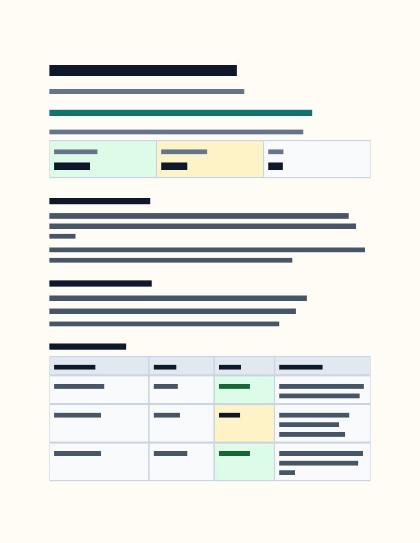
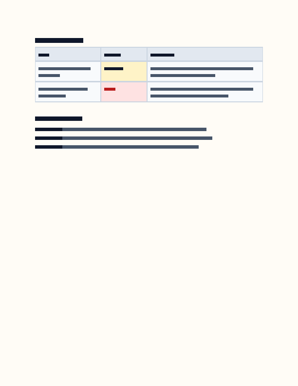

RusDox parity contract v1
examples/executive_dashboard.yaml
Semantic comparison of the typed source, reopened DOCX package, and the projection consumed by the native PDF renderer.
Open this exampleChecks19
PDF pages2
Blocks21
Images0
Contract checks
| ID | Assertion | Status | Evidence |
|---|---|---|---|
normalized_text | Normalized text | PASS | source = DOCX = PDF projection |
block_order | Block order | PASS | source = DOCX = PDF projection |
headings | Heading sequence | PASS | source = DOCX = PDF projection |
table_content | Table rows and cells | PASS | source = DOCX = PDF projection |
images | Image count and alt text | PASS | source = DOCX = PDF projection |
page_breaks | Explicit page breaks | PASS | source = DOCX = PDF projection |
section_breaks | Explicit section breaks | PASS | source = DOCX = PDF projection |
hyperlinks | Hyperlink text and targets | PASS | source = DOCX = PDF projection |
bookmarks | Bookmark anchors | PASS | source = DOCX = PDF projection |
fields | Dynamic fields | PASS | source = DOCX = PDF projection |
footnotes | Footnote text | PASS | source = DOCX = PDF projection |
table_layout | Table row and rich-cell controls | PASS | source = DOCX = PDF projection |
metadata | Document metadata | PASS | source = DOCX = PDF projection |
page_setup | Page setup | PASS | source = DOCX = PDF projection |
headers_footers | Headers and footers | PASS | source = DOCX = PDF projection |
page_numbering | Page-number fields | PASS | source = DOCX = PDF projection |
docx_package | DOCX package integrity | PASS | required OOXML parts and relationships are present |
pdf_file | PDF file integrity | PASS | PDF header, trailer, pages, and renderer evidence are present |
visual_diff | Rendered-page visual threshold | SKIP | no baseline supplied; deterministic page snapshots were still generated |
Generated artifacts
- generated/executive-dashboard.docx5757 bytes
dc3211b22d4ba7814af09ed3aee5f0a64cfce4d515eaef581bb3b3190bd87934 - rendered/executive-dashboard.pdf2110719 bytes
92110ccdd29530fa775cfb93f2411e00a4f8aafdbdeaa65435f1fd8785ef152d
Visual layout comparison
Page snapshots are deterministic geometry rasters generated from the same layout operations as the PDF. They detect movement, wrapping, page-count, table, image, and spacing regressions; they are not screenshots from Microsoft Word or a PDF viewer.

Page 1 — snapshot generated; no visual baseline supplied 
Page 2 — snapshot generated; no visual baseline supplied